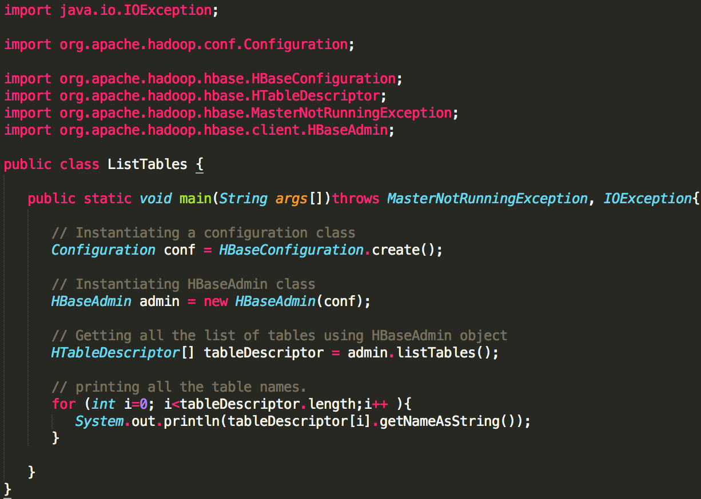
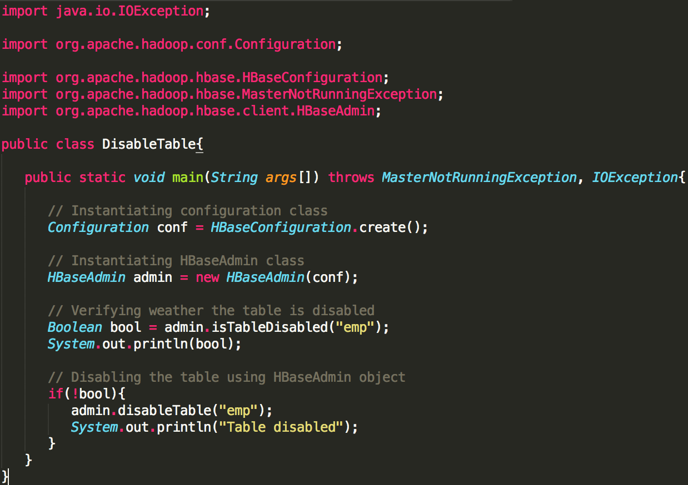

HBase
CSCI 5828 — Fall 2015
Kaiyue An
Hadoop
- Uses distributed file system for storing big data
- Limitations of Hadoop
- Can perform only batch processing
- Data will be accessed only in a sequential manner
- Applications such as HBase, Cassandra, couchDB, Dynamo, and MongoDB are some of the databases that store huge amounts of data and access the data in a random manner
What is HBase(1)
- A distributed column-oriented database built on top of the Hadoop file system
- Quick random access to huge amounts of structured data
- Leverages the fault tolerance provided by the Hadoop File System (HDFS)
- One can store the data in HDFS either directly or through HBase
What is HBase(2)
- Data consumer reads/accesses the data in HDFS randomly using HBase
- HBase sits on top of the Hadoop File System and provides read and write access
{kind=link}
Column-Oriented Database
- It is suitable for Online Analytical Processing (OLAP)
- Column-oriented databases are designed for huge tables
{kind=link}
Features of HBase
- HBase is linearly scalable
- It has automatic failure support
- It provides consistent read and writes
- It integrates with Hadoop, both as a source and a destination
- It has easy java API for client
- It provides data replication across clusters
Where to Use HBase
- Apache HBase is used to have random, real-time read/write access to Big Data
- It hosts very large tables on top of clusters of commodity hardware
- Apache HBase is a non-relational database modeled after Google's Bigtable
- Bigtable acts up on Google File System, likewise Apache HBase works on top of Hadoop and HDFS
Architecture
- In HBase, tables are split into regions and are served by the region servers
- Regions are vertically divided by column families into “Stores”
- Stores are saved as files in HDFS
- Data storage will be in the form of regions (tables)
- These regions will be split up and stored in region servers
HBase shell(1)
- HBase contains a shell using which you can communicate with HBase
- General Commands: status, version, table_help, whoami
- Data Definition language: create, list, disable, enable, alter, etc
- Data Manipulation language: put, get, delete, scan, etc
HBase shell(2)
Starting HBase shell
cd /usr/localhost/
cd Hbase
./bin/hbase shell
General commands
- status: returns the status of the system including the details of the servers running on the system
- version: returns the version of HBase used in your system
- table_help: guides you what and how to use table-referenced commands
- whoami: returns the user details of HBase
Java API
- The fastest way to communicate with HBase
- Java Admin API
- Class HBaseAdmin: a class representing the Admin
- Class Descriptor: this class contains the details about an HBase table such as: if the table is read only, the descriptors of all the column families, etc
Create table
- Syntax
create ‘table name',’column family’ - Example
create 'emp', 'personal data', ’professional data’ - Result

- Or: create a table using java API: using createTable() method of HBaseAdmin class
List table(1)
- list
- Or: listing tables using java API
- Step 1: A method called listTables() in the class HBaseAdmin to get the list of all the tables in HBase. This method returns an array of HTableDescriptor objects
- Step 2: Get the length of the HTableDescriptor[] array using the length variable of the HTableDescriptor class. Get the name of the tables from this object using getNameAsString() method. Run the ‘for’ loop using these and get the list of the tables in HBase.
List table(2)
- Listing tables using java API 
{kind=link}
Disable table(1)
- Command
- disable: used to delete a table or change its settings
- is_disabled: used to find whether a table is disabled
- disable_all: used to disable all the tables matching the given regex
Disable table(2)
- Disable a table using java API
- Step 1: Instantiate HBaseAdmin class
- Step 2: Verify whether the table is disabled using isTableDisabled() method
- Step 3: If the table is not disabled, disable it 
{kind=link}